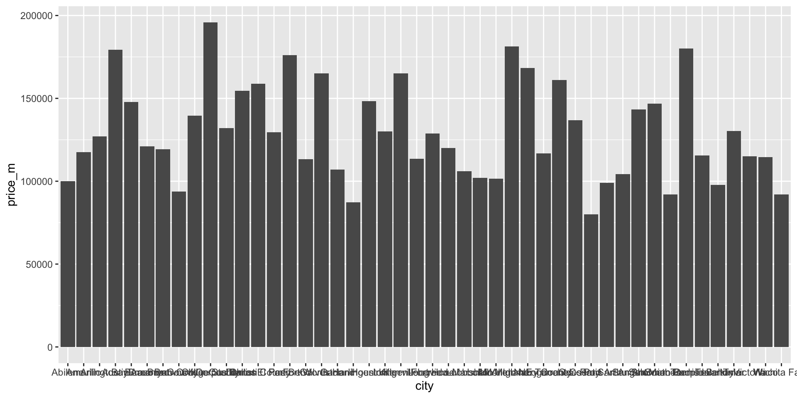
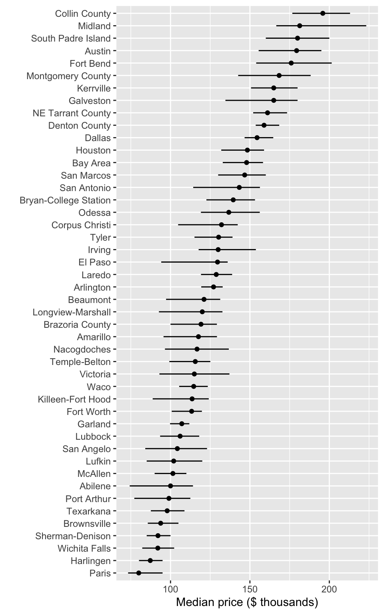

Code
library(ggplot2)
library(dplyr)
txhousing_price <- txhousing |>
group_by(city) |>
summarise(price_m = median(median, na.rm=TRUE))
ggplot(txhousing_price, aes(x=city, y=price_m)) +
geom_col() 
Session 3: AI in the research workflow, and data visualisation
2026-10-28
Several hands-on activities. Keep your shared-project open, and commit as you go.
Code help
Explain unfamiliar code, suggest a first draft, translate between approaches
Debugging
Interpret an error message, spot a likely cause, propose a fix
Documentation
Draft comments, function docs and README sections from code you wrote
Treat it like a fast, confident colleague: one who is sometimes wrong, and who will likely bloat your code, use outdated styles and add too many checks. You stay responsible for the result.
Free web interface
Integrated with Positron
index.qmdscss elements| Option | Sign in | Good for |
|---|---|---|
| Posit AI Pass (Posit’s own service) | Browser login | Simplest, no keys to manage |
| Your own account (Anthropic, OpenAI and others) | API key | If you already pay for one |
| GitHub Copilot | Browser login | Positron, if you have access |
| Local model (Ollama, LM Studio) | None | Data stays on your computer |
The IDE should show the cost of any paid usage.
“Code debugging and function documentation were assisted by [tool, version]. All output was reviewed and tested by the authors.”
Tip
A fix is not finished until you have tested it against something you trust.
data$value looks for a column literally called “value”. The second issue is that mean returns NA when the column has missing values. Discuss any differences between the assistant’s version and this one.If you map variables to plot elements correctly with ggplot2, then the plot is a statistic.
Show the data
Points or distributions, not only bars of means
One message per figure
The title or caption says what to notice
Label clearly
Axes with units, readable text size
Accessible colour
Colourblind-safe palettes, and not colour alone
Honest scales
Bars start at zero
Right size and format
Match the journal’s column width. Prefer vector formats (PDF, SVG) where allowed
List everything you would fix, run the code and think about how to make changes.
Hints: the x axis, the labels, the information hidden behind each bar.
library(forcats)
txhousing_price <- txhousing |>
group_by(city) |>
summarise(price_m = median(median, na.rm=TRUE),
price_q3 = quantile(median, 0.75, na.rm=TRUE),
price_q1 = quantile(median, 0.25, na.rm=TRUE))
ggplot(txhousing_price, ) +
geom_point(aes(x=fct_reorder(city, price_m),
y=price_m)) +
geom_errorbar(aes(x=fct_reorder(city, price_m),
ymin=price_q1,
ymax=price_q3), width=0) +
scale_y_continuous("Median price ($ thousands)",
breaks=c(100000, 150000, 200000),
labels=c("100", "150", "200")) +
xlab("") +
coord_flip()
| Option | What it does |
|---|---|
fig-width, fig-height |
Size the plot is drawn (inches) |
out-width |
Scales the finished image on the page |
fig-dpi |
Resolution of raster figures |
If you find there is too much white space around the figure, adjust the width and height. The figure probably has the wrong aspect ratio for the space available.
The package patchwork is great for organising multiple plots into a figure.
In your shared-project, open paper.qmd
library() lines from Wrong) into a new chunk, with a label like fig-prices and a fig-capfig-width and fig-height and render again. Which shape suits 46 city names?out-width: 50% and 100%. Notice the text gets smaller or larger with the image@fig-pricesAim for labels that are readable, little white space, and a shape that fits the page. Try a tall, narrow figure first, e.g. fig-width: 5, fig-height: 8.
Captions should have three parts.
| Part | Answers | Example |
|---|---|---|
| 1. What | What is this about? | Exploring species differences in flipper length of penguins. |
| 2. How | What is shown, and how are variables mapped? | Each point is one penguin, jittered to reduce overlap. Black points are species means. |
| 3. So what | What should the reader learn? | Gentoo penguins have the longest flippers. |
Alt text describes the plot for vision-impaired readers
| Include | Example |
|---|---|
| Chart type | Scatter plot |
| What is plotted | Flipper length ranging from 170 to 230 against Adelie, Chinstrap and Gentoo |
| The key pattern | Adelie and Chinstrap range from 170 to 210, and Gentoo from 200 to 230 |
In paper.qmd, for your fig-prices chunk
fig-cap: what it is about, how to read it, and so whatfig-alt: chart type, what is plotted, and the key patternalt text is thereHint: the data are monthly median house sale prices for 46 Texas cities, 2000 to 2015.
Example caption: “Median house prices across 46 Texas cities, 2000 to 2015. Each point is a city’s median monthly sale price, with lines spanning the first to third quartile; cities are ordered by median. Prices roughly double from the cheapest cities (Paris, Harlingen, around $80–90k) to the most expensive (Collin County, Midland, around $180–200k), and the more expensive cities also tend to vary more.”
Example alt text: “Dot plot with horizontal interval bars of median house price for 46 Texas cities, ordered from lowest to highest. Prices range from about $80,000 in Paris to about $196,000 in Collin County. Intervals are wider for the more expensive cities.”
1 · GitHub
here2 · Publications and software
3 · AI and figures
Thank you! Keep practising with your shared-project.

This work is licensed under a Creative Commons Attribution-NonCommercial-ShareAlike 4.0 International License.